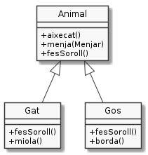

Classes abstractes
A una jerarquia de classes, es pressuposa que la superclasse és més abstracta que la subclasse. Sovint recollim els elements comuns d'unes classes i els agrupem en una superclasse.
Considera el següent exemple:

1class Animal {
2 /* … */
3 public void aixecat(){/* … */ }
4 public void menja(Menjar menjar){ /* … */ }
5 public void fesSoroll(){ /* … */ }
6}
7
8class Gat extends Animal {
9 /* … */
10 @Override public void fesSoroll() { /* … */ }
11 public void miola() { /* … */ }
12}
13class Gos extends Animal {
14 /* … */
15 @Override public void fesSoroll(){ /* … */ }
16 public void borda(){ /* … */ }
17}
La classe Animal agrupa els elements comuns dels gats i dels gossos. A
l'exemple, tots els animals, tant gats com gossos, ens permeten
demanar-los que es posin drets i que mengin un determinat menjar.
Fixa't que d'aquesta manera ens estalviem de definir tots aquests mètodes a les diferents
subclasses d'animal. Únicament ens caldrà definir els elements particulars. Per exemple,
la classe Gat podria definir el mètode fesSoroll() de la següent manera:
1public void fesSoroll() {
2 miola();
3}
A l'exemple dels animals, té sentit instanciar un Gat o un Gos. En podem fer coses amb ells com, demanar-los que mengin, que miolin, bordin (o més general, que facin soroll).
Ens podem imaginar quin serà el soroll d'un gat o d'un gos, però, com serà
el soroll d'una instància de Animal?
abstract
Quan la raó principal de crear una classe és per actuar com a agrupador d'elements comuns de les seves subclasses, però no es pretén que existeixin instàncies d'aquesta classe, aquesta classe li diem classe abstracta.
1abstract class Animal {
2 /* … */
3 public void aixecat(){/* … */ }
4 public void menja(Menjar menjar){ /* … */ }
5 public abstract void fesSoroll();
6}
7
8class Gat extends Animal {
9 /* … */
10 @Override public void fesSoroll() { /* … */ }
11 public void miola() { /* … */ }
12}
13class Gos extends Animal {
14 /* … */
15 @Override public void fesSoroll(){ /* … */ }
16 public void borda(){ /* … */ }
17}
Al codi anterior veiem que n'hi ha prou amb afegir el modificador
abstract davant la definició de la classe i del mètode abstracte per
declarar l'abstracció.
El mètode abstracte fesSoroll(), a banda del modificador abstract,
presenta la particularitat que no té cos del mètode. És a dir, després de
definir la signatura, no apareix l'habitual bloc d'instruccions que
defineixen què ha de fer el mòdul. La signatura acaba en un senzill punt i
coma.
En UML, les classes i mètodes abstractes es mostren en cursiva.
Hi poden haver tants mètodes abstractes com ens calguin. El que és
important és que totes les subclasses de Animal hauran de concretar
el cos dels mètodes abstractes que hereten o bé hauran de ser també
classes abstractes.
La manera d'indicar que una classe és subclasse d'una classe abstracta no
es distingeix de si la superclasse hagués estat concreta. És a dir,
s'indica amb l'habitual extends .
Una subclasse d'una classe abstracta pot ser també abstracta. Simplement cal no implementar algun dels mètodes abstractes de la superclasse o afegirn-ne de nous.
D'una classe abstracta no podem crear instàncies. La següent línia de codi no compilarà:
1Animal animal = new Animal(); // ERROR: Animal és abstracte i no
2 // pot ser instanciat
El que sí podem fer és declarar referències a animals i inicialitzar-les amb instàncies d'alguna de les seves subclasses, gràcies al polimorfisme.